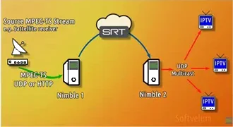

Softvelum Nimble Streamer
- Servidor de streaming por software de alta eficiencia y bajo consumo de recursos para distribución de vídeo
- Soporte multiprotocolo integral compatible con SRT, NDI, RTMP, WebRTC, HLS y MPEG-DASH
- Soporte multiplataforma compatible con envíos personalizados a TV broadcast y todas las plataformas de streaming (YouTube, Facebook, Twitch, TikTok, LinkedIn, Dailymotion, etc.)
- Transcodificación de vídeo en directo con aceleración por hardware y soporte para códecs H.264 y H.265/HEVC
- Inserción dinámica de anuncios (SSAI) y protección de contenido avanzada mediante sistemas DRM estándar
- Configuración, enrutamiento y supervisión centralizada en tiempo real mediante la interfaz web WMSPanel
- Protección de contenido de extremo a extremo mediante cifrado y sistemas DRM estándar (Widevine, FairPlay, PlayReady)
- Motor de grabación digital (DVR) integrado con capacidad de retroceso (time-shift) en emisiones en vivo